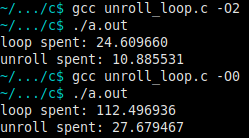

unroll小循环对性能的影响
本文通过一个实例演示, 通过展开一个小的循环, 程序性能会有所提升. 至于原因, eh…详细了解编译器后端优化再来回答了;-)
程序代码如下:
#include <stdio.h> #include <time.h> #define N 1000000000 int multiple_loop(int m[][4], int *v, int *res) { int i, j; for (i = 0; i < 4; ++i) { res[i] = 0; for (j = 0; j < 4; ++j) { res[i] += m[j][i] * v[j]; } } return 0; } int t_multiple_loop(int m[][4], int *v, int *res) { int i; clock_t begin, end; double time_spent; time_spent = 0.0; begin = clock(); for (i = 0; i < N; ++i) multiple_loop(m, v, res); end = clock(); time_spent += (double)(end - begin) / CLOCKS_PER_SEC; printf("loop spent: %f\n", time_spent); return 0; } int multiple_unroll(int m[][4], int *v, int *res) { res[0] = m[0][0] * v[0] + m[1][0] * v[1] + m[2][0] * v[2] + m[3][0] * v[3]; res[1] = m[0][1] * v[0] + m[1][1] * v[1] + m[2][1] * v[2] + m[3][1] * v[3]; res[2] = m[0][2] * v[0] + m[1][2] * v[1] + m[2][2] * v[2] + m[3][2] * v[3]; res[3] = m[0][3] * v[0] + m[1][3] * v[1] + m[2][3] * v[2] + m[3][3] * v[3]; return 0; } int t_multiple_unroll(int m[][4], int *v, int *res) { int i; clock_t begin, end; double time_spent; time_spent = 0.0; begin = clock(); for (i = 0; i < N; ++i) multiple_unroll(m, v, res); end = clock(); time_spent += (double)(end - begin) / CLOCKS_PER_SEC; printf("unroll spent: %f\n", time_spent); return 0; } int display(int *res) { int i; for (i = 0; i < 4; ++i) printf("%d ", res[i]); printf("\n"); return 0; } int main(int argc, char *argv[]) { int m[4][4] = { {0, 1, 2, 3}, {4, 5, 6, 7}, {8, 9, 10, 11}, {12, 13, 14, 15} }; int v[4] = {0, 1, 2, 3}, res[4]; //multiple_loop(m, v, res); //multiple_unroll(m, v, res); //display(res); t_multiple_loop(m, v, res); t_multiple_unroll(m, v, res); return 0; }
下面给出实验数据:

可以看到不论是O0还是O2, 程序性能都会有所提升, 而且提升还不小. 所以以后编码注意把小循环展开为普通代码.